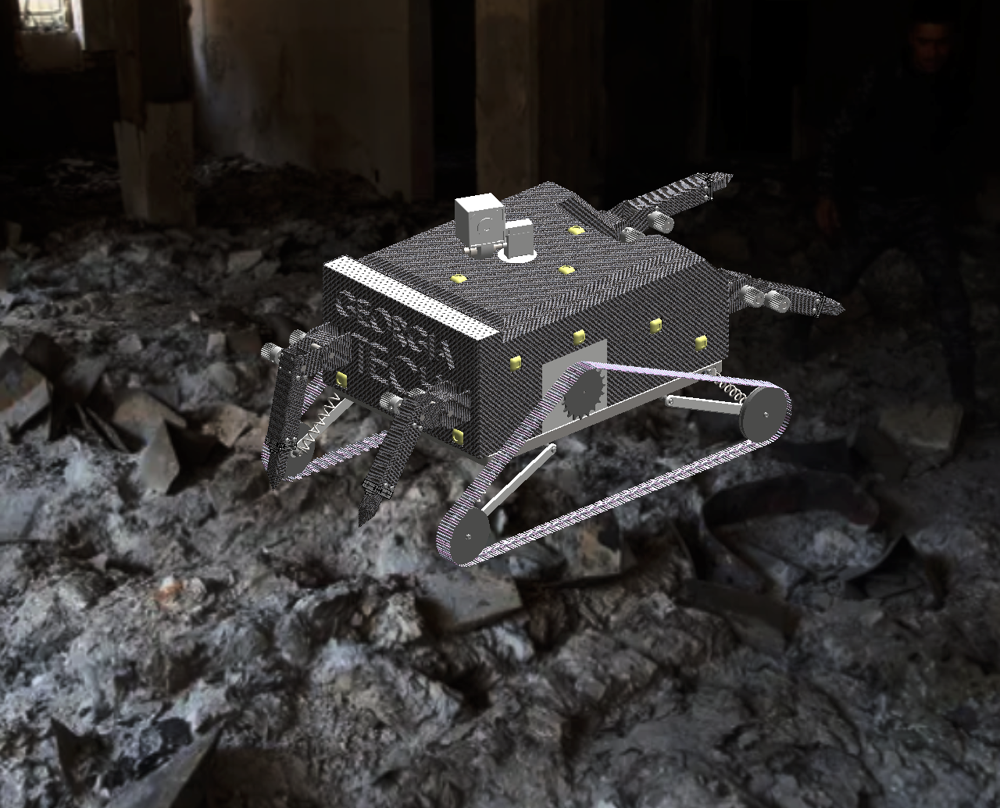
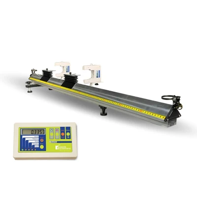

Technical Projects
This page serves as an archive aimed to document my personal projects over the years. Feel free to explore the specifics behind my design processes, technical challenges, and information gathered through these projects.
Featured Projects

Miniature Ant Robot for Search and Rescue
Team-based project tasked with designing a miniature robot capable of locating and aiding in the rescue of victims trapped in collapsed buildings during natural disasters.
View Details
Tensile Testing Research Project
The Tensile Testing lab explored the stress-strain behavior of ductile metals subject to tensile loads, introducing transducers commonly used in mechanical testing.
View Details
2D Dynamics Research Project
The 2D Dynamics lab revolved around using raw data to estimate and find material characteristics, like spring constants or damping coefficients, as well as deriving equations to describe the motion of a two dimensional system over time.
View Details
Aerodynamics Research Project
The Aerodynamics lab investigated the aerodynamic forces on a symmetric rectangular wing in a subsonic and low turbulence wind tunnel.
View Details
Audio Sampling Research Project
The Digital Sampling lab aimed to convert mp3 waveforms into analog electrical signals, utilize a personal DAQ & microphone setup to record sound waves, and acquire digital data of time-varying signals. In this experiment, a LabJack T4 and the LabVIEW software served as the DAQ.
View DetailsHTML Personal Website Creation
Track the progress that went into the design and creation of this website.
View Details
YJSP PCB Prototyping
Creating, designing, and integrating a sensor controller PCB responsible for addressing a faulty sensor.
View DetailsGeorgia Tech Orbital Initiative
Student organization aiming to advance access to space technology through the design, development, and testing of cost-effective, open-source microsatellites.
View Details